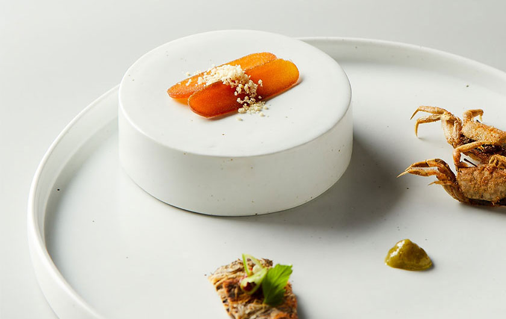

-
Restaurant O'neul
가장 풍요롭고 생생한 시간,
오늘을 주제로 한 전통 한식 다이닝Restaurant o’neul is a Korean dining inspired
by the most fulfilling and vivid time, ‘today’. -
Restaurant O'neul
가장 풍요롭고 생생한 시간,
오늘을 주제로 한 전통 한식 다이닝Restaurant o’neul is a Korean dining inspired
by the most fulfilling and vivid time, ‘today’. -
Restaurant O'neul
가장 풍요롭고 생생한 시간,
오늘을 주제로 한 전통 한식 다이닝Restaurant o’neul is a Korean dining inspired
by the most fulfilling and vivid time, ‘today’.
o’neul Value
레스토랑 오늘에서 선보이는 우리 음식은
한국인의 정체성을 담고 있는 한식에 기반을 두고 있으며,
우리 식 문화의 정통성을 지켜나가고 발전시켜 나가기 위해
레스토랑 오늘만의 스타일로 재해석 한 메뉴를 제공합니다.
o’neul’s dishes are inspired by Korean traditions and techniques.
Here we offer our unique understanding of authentic Korean cuisine,
introducing its true values through each menu.
